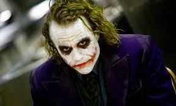

მას შემდეგ, რაც ითამაშა როლები ავსტრალიის ტელევიზიასა და ფილმებში 1990-იანების განმავლობაში, 1998 წელს ლეჯერი საცხოვრებლად
გადავიდა აშშ-ში საკუთარი საფილმო კარიერის გასავითარებლად. მისი კარიერა მოიცავს ცხრამეტ ფილმს, მათ შორის: „ჩემი სიძულვილის ათი მიზეზი“,
„პატრიოტი“, „მონსტრების წვეულება“, „რაინდის ისტორია“, „ნედ კელი“, „კუზიანი მთა“ და „ბნელი რაინდი“ .
მსახიობობასთან ერთად იყო მუსიკალური ვიდეოების პროდიუსერი და რეჟისორი და ესწრაფოდა, გამხდარიყო კინორეჟისორი.
ენის დელ მარის განსახიერებით ფილმში „კუზიანი მთა“, 2005 წელს ლეჯერმა მიიღო ნიუ-იორკის ფილმის კრიტიკოსთა წრეების ჯილდო კატეგორიაში
„საუკეთესო მსახიობი“, ხოლო 2006 წელს - „საუკეთესო მსახიობის“ ჯილდო ავსტრალიური ფილმების ინსტიტუტისგან და ნომინირებული იყო 2005 წლის
ოსკარის დაჯილდოების ცერემონიაზე კატეგორიაში „ოსკარი საუკეთესო მსახიობი მამაკაცისთვის“, ასევე ბრიტანული აკადემიის ფილმების დაჯილდოებაზე
კატეგორიაში „საუკეთესო მსახიობი მთავარ როლში“. სიკვდილის შემდეგ მან მიიღო „დამოუკიდებელი სულის რობერტ ალტმანის პრემია“ მსახიობთა დანარჩენ
შემადგენლობასთან ერთად, მისი მიერ ჩატარებული სამუშაოსთვის რეჟისორის და კასტინგის რეჟისორის აპლუაში ფილმზე „მე იქ არ ვარ“, რომელიც შთაგონებული
იყო ამერიკელი მომღერლისა და სიმღერების ავტორის ბობ დილანის ცხოვრებითა და სიმღერებით. ფილმში ლეჯერი განასახიერებს გამოგონილ მსახიობს სახელად
რობი კლარკი, ერთ-ერთ პერსონაჟს იმ ექვსიდან, რომლებიც ასახავენ დილანის ცხოვრებისა და პერსონის ასპექტებს. ლეჯერმა მიიღო არაერთი ჯილდო მის
მიერ განსახიერებული ჯოკერის როლისთვის ფილმში „ბნელი რაინდი“, მათ შორის ოსკარი მეორეხარისხოვანი როლის საუკეთესო შესრულებისათვის,
საუკეთესო მსახიობის საერთაშორისო ჯილდო 2008 წლის ავსტრალიური ფილმების ინსტიტუტის დაჯილდოებაზე, რითაც ის გახდა პირველი მსახიობი,
რომელმაც მიიღო ჯილდო სიკვდილის შემდეგ, ლოს-ანჯელესის ფილმის კრიტიკოსთა ასოციაციის ჯილდო მეორეხარისხოვანი როლის საუკეთესო
შესრულებისათვის, 2009 წლის ოქროს გლობუსი მეორეხარისხოვანი როლის საუკეთესო შესრულებისათვის და 2009 წლის ბრიტანული აკადემიის
ფილმების ჯილდო მეორეხარისხოვანი როლის საუკეთესო შესრულებისათვის.
ლეჯერი დაიღუპა ოცდარვა წლის ასაკში „გამოწერილი წამლების მომწავლელი კომბინაციის“ შემთხვევითი მიღების გამო.
სიკვდილამდე მხოლოდ რამდენიმე თვით ადრე დაასრულა ლეჯერმა გადაღებები მისი ბოლო, ჯოკერის როლისთვის ფილმში „ბნელი რაინდი“.
სიკვდილის მომენტისათვის, 2008 წლის 22 იანვრისთვის, მას გადაღებების დაახლოებით ნახევარი ჰქონდა დასრულებული ტონის როლზე, ტერი
გილიამის ფილმისთვის „დოქტორ პარნასის წარმოსახვა“.
- (1995) ჩემი სიძულვილის 10 მიზეზი
- (2000)პატრიოტი
- (2003)ნედ კელი
- (2005)კუზიანი მთა
- (2006)კენდი
- (2007)მე იქ ვარ
- (2008)ბნელი რაინდი
- (2009)დოქტორ პარნასის წარმოსახვა
- ოსკარი-საუკეთესო მსახიობი კაცი მეორეხარისხოვან როლში
2008 — ბნელი რაინდი
- ოქროს გლობუსი-საუკეთესო მსახიობი კაცი მეორეხარისხოვან როლში
2008 — ბნელი რაინდი
- ბაფთა- საუკეთესო მსახიობი კაცი მეორეხარისხოვან როლში
2008 — ბნელი რაინდი
